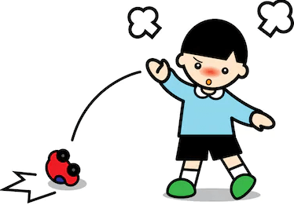
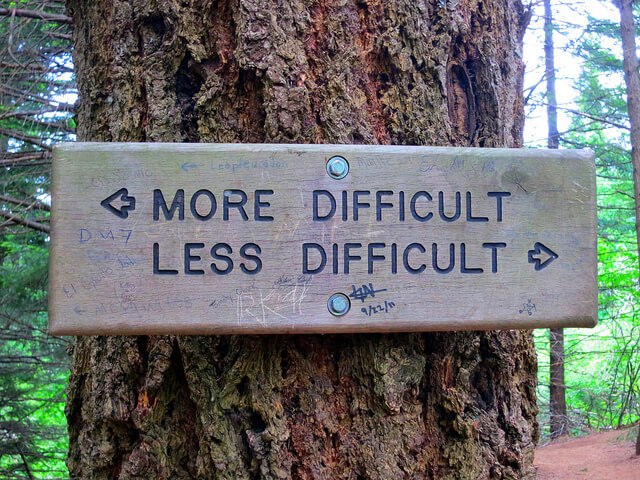

Programming is really hard no matter how good you get at it there will always be something to learn and problem to solve. We must learn to get comfortable with that feeling of frustration.
To become skilled problem solver, we must first learn to recognize the reality of the situation and cultivate strategies and habits to overcome problems and challenges rather than let them slowly consume and destroy us.
Reflecting on the last 5 weeks and the beginning of my journey into the challenging field of computer programming, I can already see massive improvements in the way I deal with frustration.
In the beginning I would get angry, yell and even throw my toys around the room. It wouldn’t take much - even just omitting a {curly bracket} would render my entire code broken and I would spend hours cutting lines of code out one by one until I could fix the issue feeling stupid when I realized the solution.
As my experience grew, I learnt some of the nuances of JavaScript, I also observed the damage and stress I was causing to myself over a something as pointless and meaningless and a silly game of minesweeper! Realizing, if I wanted to work in an office and have a sustainable career in coding, I would need to learn to manage this frustration.
The first method I found to work for me was to throw out the instructions, I realized that there are many different solutions to the same problem in programming. Trying to follow along step by step with somebody else solution made me confused and also stunted my critical thinking. I decided to read the instructions in their entirety to get an understanding of what was being asked then I would put them away and open up my text editor and start writing out some //pseudocode for different parts of the problem.
Knowing that I like to learn by doing I would jump in and start trying different ideas to see what would work, often asking myself “how do I make it do this?” next I would do a google search often coupled with talking to myself out loud. I found it useful to whisper really slowly and softly instead of yelling and screaming as this would make me more relaxed and make it easier to solve the problem.
The last and probably the most important strategy I found to work for me is to simply get up and walk away. Once I hit a brick wall and had spent 15-30min getting nowhere it was extremely beneficial to get up go for a walk or even sleep on it, this allowed me to come back to the problem the next day fresh – giving the subconscious time to process the problem is and extremely powerful strategy.
Of course if all else fails it is important to know when to reach out for help asking the course facilitators or even looking at your peer code and seeing how you could implement or adapt other solutions to your own is an efficient way to learn. I do believe asking for help should be reserved until you have tried and failed yourself first otherwise I don’t really learn anything!